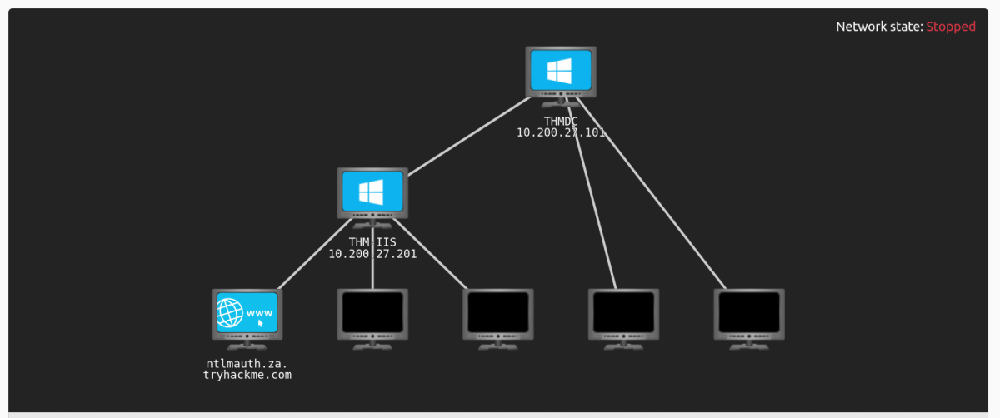
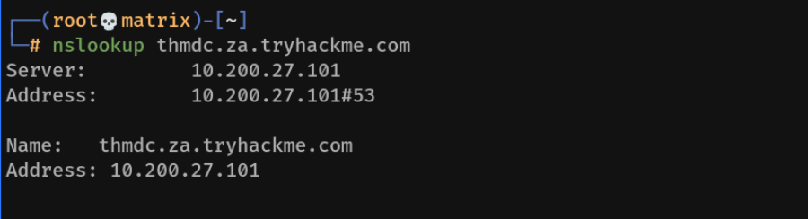

Breaching Active Directory
Breaching Active Directory
Before we can exploit AD misconfigurations for privilege escalation, lateral movement, and goal execution, you need initial access first. You need to acquire an initial set of valid AD credentials. Due to the number of AD services and features, the attack surface for gaining an initial set of AD credentials is usually significant. In this room, we will discuss several avenues, but this is by no means an exhaustive list.
When looking for that first set of credentials, we don't focus on the permissions associated with the account; thus, even a low-privileged account would be sufficient. We are just looking for a way to authenticate to AD, allowing us to do further enumeration on AD itself.

Few of the Initial Access Techniques:
In this network, we will cover several methods that can be used to breach AD. This is by no means a complete list as new methods and techniques are discovered every day. However, we will cover the following techniques to recover AD credentials in this network:
• NTLM Authenticated Services
• LDAP Bind Credentials
• Authentication Relays
• Microsoft Deployment Toolkit
• Configuration Files
We can use these techniques on a security assessment either by targeting systems of an organisation that are internet-facing or by implanting a rogue device on the organisation's network.
Using Networks in Tryhackme:
First, Download a different vpn file. Named: breachingad.ovpn from Tryhackme
Then,
You will have to configure DNS on the host on which you are running the VPN connection. In order to configure our DNS, we must edit the /etc/systemd/resolved.conf file. Uncomment the DNS line and add the IP of THMDC: (As Shown in Network Diagram Above)

Finally, Restart the service:
systemctl restart systemd-resolved
Or
Add the DNS in GUI Network Manager/nmtui tool (1st is the THM DNS then use default in the 2nd place).
and restart the Network Manager service:
systemctl restart NetworkManager
Testing DNS Status
nslookup thmdc.za.tryhackme.com
We should get the IP back

Initial Access Methodology
A) OSINT & Phishing
B) NTLM Authenticated Services
C) LDAP Bind Credentials
D) Authentication Relays
E) Microsoft Deployment Tooolkit
F) Configuration Files
Conclusion:
A significant amount of attack avenues can be followed to breach AD. We covered some of those commonly seen being used during a red team exercise in this network. Due to the sheer size of the attack surface, new avenues to recover that first set of AD credentials are constantly being discovered. Building a proper enumeration methodology and continuously updating it will be required to find that initial pair of credentials.
Mitigations
In terms of mitigations, there are some steps that organisations can take:
• User awareness and training - The weakest link in the cybersecurity chain is almost always users. Training users and making them aware that they should be careful about disclosing sensitive information such as credentials and not trust suspicious emails reduces this attack surface.
• Limit the exposure of AD services and applications online - Not all applications must be accessible from the internet, especially those that support NTLM and LDAP authentication. Instead, these applications should be placed in an intranet that can be accessed through a VPN. The VPN can then support multi-factor authentication for added security.
• Enforce Network Access Control (NAC) - NAC can prevent attackers from connecting rogue devices on the network. However, it will require quite a bit of effort since legitimate devices will have to be allowlisted.
• Enforce SMB Signing - By enforcing SMB signing, SMB relay attacks are not possible.
• Follow the principle of least privileges - In most cases, an attacker will be able to recover a set of AD credentials. By following the principle of least privilege, especially for credentials used for services, the risk associated with these credentials being compromised can be significantly reduced.
Now that we have breached AD, the next step is to perform enumeration of AD to gain a better understanding of the domain structure and identify potential misconfigurations that can be exploited. This will be covered in the next room. Remember to clear the DNS configuration!